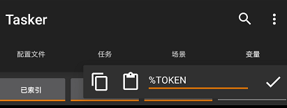

上一篇 利用 Tasker 实现短信自动转发：通过 Server 酱推送到微信（一），我们成功把存在 Tasker 中的短信推送到微信（如果不知道怎么截取短信，可以参考 利用 Tasker 实现短信自动转发：截取短信） 但是有的消息想要多个人接收到，而 Server 酱不支持一对多推送，这时候可以使用 Push Plus 这个平台，不仅支持一对一推送，还支持一对多推送；
前期准备
进入 Push Plus 官网
点击登录：
接下来要绑定微信，点击微信推送，拿手机微信扫码后关注：
微信关注后，网页就自动登录了，点击 一对多推送，会看到 Push Plus 给你的 TOKEN：
如果想要实现群发，可以新建一个群组：
我这里随意新建了一个；
可以看到右侧有「查看二维码」、「订阅人」和「删除」，三个选项：
可以把二维码发送给想要推送的朋友，加入群组中；
点击「订阅人」可以看到订阅人列表：
通过 Push Plus 推送到微信
同样的，为了方便以后修改，我们在手机的 Tasker 中新建一个以 % 开头的变量，变量名随意，我命名 %TOKEN：

然后我们把获得的 TOKEN ，填入 %TOKEN 中：

在 任务Tab 栏 新建一个任务；
点击 网络 → HTTP Request
「Method」选择 GET
推送到个人
「URL」输入：
http://pushplus.hxtrip.com/send?token=%TOKEN&title=<这里把包括尖括号内的文字替换成想要的标题>&content=%VERIFICATION_CODE&template=html
推送到群组
「URL」输入：
其实就是在推送到个人的链接后面加上 &topic=<你的群组编码>：
http://pushplus.hxtrip.com/send?token=%TOKEN&title=<这里把包括尖括号内的文字替换成想要的标题>&content=%VERIFICATION_CODE&template=html&topic=<你的群组编码>
直接返回到首页，再点击右上角的 ✓ 保存；
测试短信
我们来测试一条带验证码的短信，看看能不能推送到微信里：
微信收到 Push Plus 推送啦
点进去查看消息：
成功接收！至此，通过 Push Plus 一对多推送到微信就完成啦！